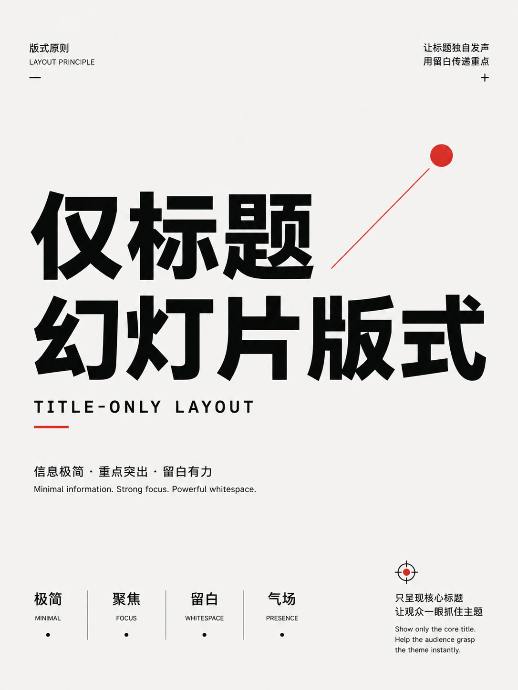

01 · 左齐非对称（原海报式）
左侧硬边稳锚，把右上角让给呼吸留白与极细视觉引导；理性、现代、自带设计感。
TITLE-ONLY LAYOUT
信息极简 · 重点突出 · 留白有力 Minimal information. Strong focus. Powerful whitespace.
页面还挂着 4 处冗余，观众忙着低头读字
屏幕上的副标、要点和演讲者的口播同走语言通道。眼睛刚看两行，耳朵就漏掉了你说的话。
直接点击画布上的虚线冗余块，把它们逐一剥离进「归口述区」。
「只呈现核心标题，让观众一眼抓住主题。让标题独自发声，用留白传递重点。」 — 340 原海报核心主张
做演示文稿时最常见的焦虑，是怕页上字太少显得「没干货」，于是把讲稿拆成一段副标加三条要点全铺在投影上。结果恰好相反：观众的眼睛一看到密密麻麻的字，就会忍不住低头默读。
教育心理学家理查德·梅耶（Richard E. Mayer）在 2001 年出版的《Multimedia Learning》中总结了一致性原则与冗余原则：人脑处理书面文字与口头演讲的语言工作记忆容量非常有限；当屏幕文字与演讲者口播同时塞进同一条通道，两股语言流会直接撞车，观众要么顾着读字漏听你讲，要么两头都记不牢。
仅标题版式并不是把内容删丢了，而是重新分工：屏幕只留下 1 秒即可吞下的核心判断，其余前因后果交还演讲者的声音、停顿和眼神。
语言通道冲突 · 观众读字漏听口播（示意）
海报上写着「留白有力」，这句话省略了一个前提：留白本身不会自动变有力。把 20px 的小字丢进 90% 的白屏里，观众不会觉得高级，只会以为你漏排了正文。
留白要转化成「气场」，靠的是标题字阶与空场的体量拔河。经验上，16:9 仅标题页的留白落在约 60%–84%、文字与四边保持 7% 以上安全距时，既能压住大屏，又留得住空气。
往左过头（字太小、留白逼近 90%），后排十米开外字形发虚，气场怯弱；往右过头（字撑破九成宽、留白跌破 55%），从容的宣言立刻变成紧绷的招牌，还容易被会议室投影仪的边缘裁剪吞掉笔画。
仅标题幻灯片并非设计师凭空发明的极简潮流，而是二十一世纪初演讲界对「项目符号堆砌」连续反思，并在文件标准中沉淀下来的经典骨架。点选下方四帧档案胶片查看关键节点：
左侧硬边稳锚，把右上角让给呼吸留白与极细视觉引导；理性、现代、自带设计感。
重心略高于几何中心约 4% 抵消视觉下坠，四面留白均衡，适合发布会庄重定调。
暗底亮字短促断行，整句一拍闪过；须配快语速连续翻页，单页停留不宜太久。
标题稳压在画面下三分之一，把大块安静空间留在上方，常用于现场人屏同框拍摄。
和同组极简页怎么区分？需要交代演讲人、副标与日期的开场封面交给 335 标题幻灯片；长报告里专门带章节序号过场交给 337 节标题幻灯片；如果连标题占位都想拆掉、全靠图形自由构图，请看 341 空白幻灯片。

340 原海报本身就是一张自示范作品：冷米白宣纸底（#F3F2EF）、极重墨黑双行大标（#070908），全幅只在右上 45° 引线圆点、英文下短横杠与右下焦点圆心三处落笔瑞士信号红（#D6322B）。点击下方原海报的四枚关键词，看它们如何落在画面里：
极简 MINIMAL：整张 340 原海报全幅只留冷米白纸面、纯黑字组与三处瑞士红（右上圆点斜线、短红杠、右下焦点圆心），砍掉所有装饰插画与多余说明，本身就是对「信息极简」的现场示范。